SonoBridge: Anatomy-Conditioned Schrödinger Bridge for Unpaired CT-to-Ultrasound Synthesis
SonoBridge turns labeled CT volumes into ultrasound views with known probe poses and aligned anatomical labels. It learns tissue appearance from unpaired clinical scans and uses the simulated acquisition to determine which fine structures are visible.
Interactive demo
Move the probe to compare ultrasound with its CT slice and labels. At a fixed pose, adjust the fine-structure weight λ or enlarge the modeled shadows.
The patient outline is illustrative.
Method
SonoBridge has two parts: an automated virtual acquisition that turns labeled CT into simulated ultrasound views with known probe poses, and an anatomy-conditioned Schrödinger bridge that refines each view toward clinical appearance.
Anatomy-conditioned refinement
A five-step Schrödinger bridge starts from the simulated echoes and shadows. At every step, the organ-level semantic context, a mask of the whole target organ, provides the layout of the view. The fine-grained structural maps add hepatic vessels or the renal medulla, which the simulation renders weakly. Visibility derived from the simulated acquisition limits them to visible tissue.
The unpaired clinical scans teach the bridge what ultrasound looks like; the anatomical maps keep each output tied to the source anatomy and its probe pose.

Refinement step by step
Drag the slider or press play to follow one view through the five bridge steps. Both models start from the same simulated image; SonoBridge is guided by the anatomical maps at every step, UNSB is not.

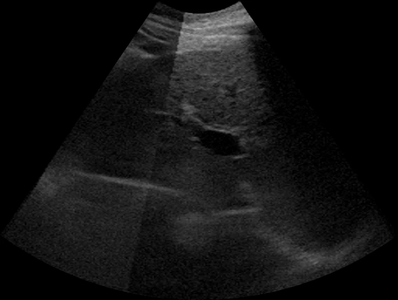
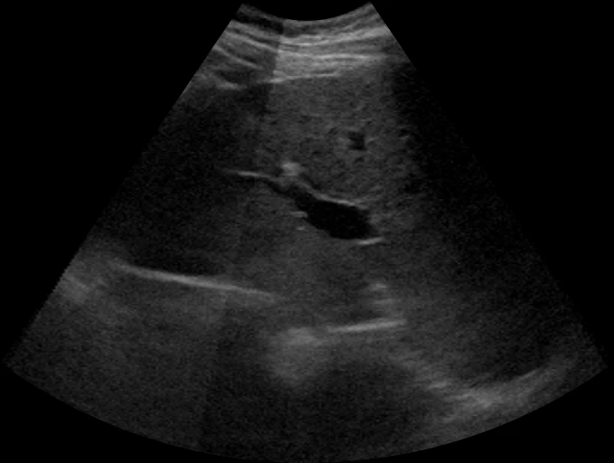
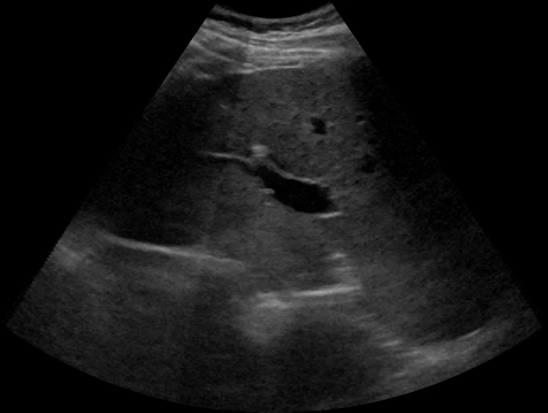
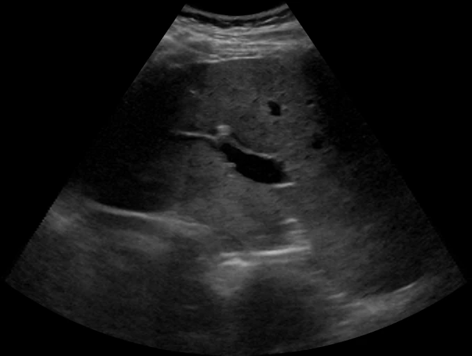
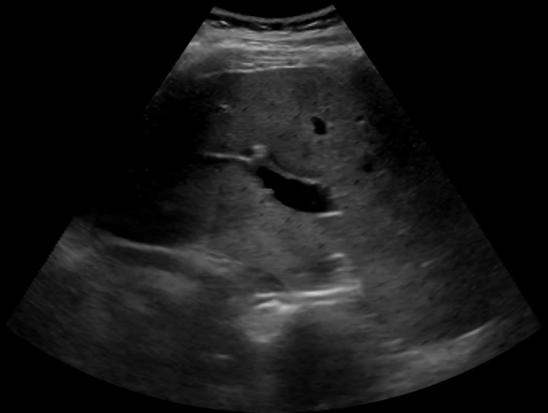
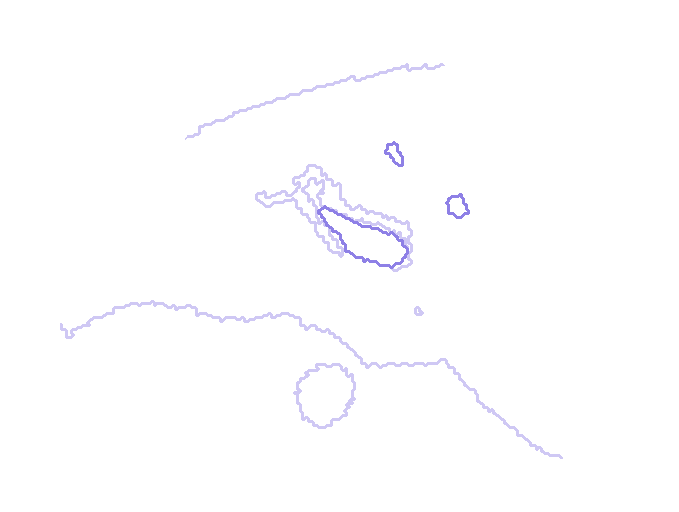
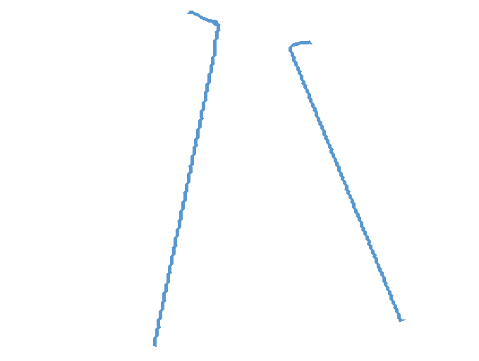
Vessel contrast Δμ 0.20
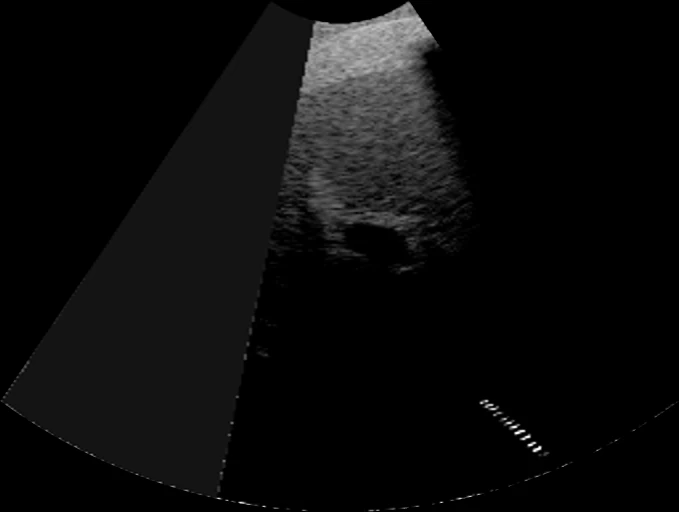
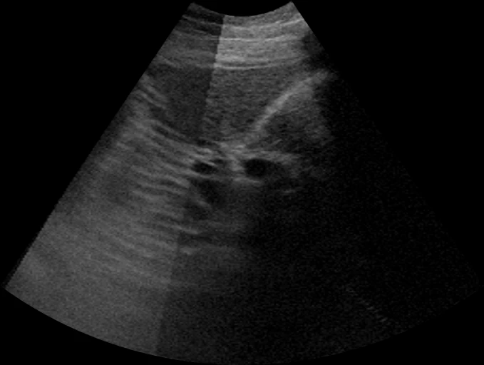
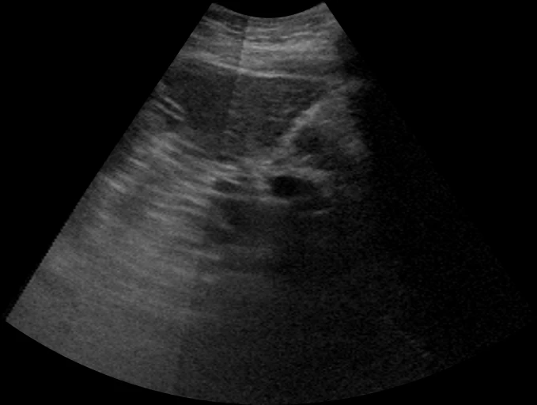
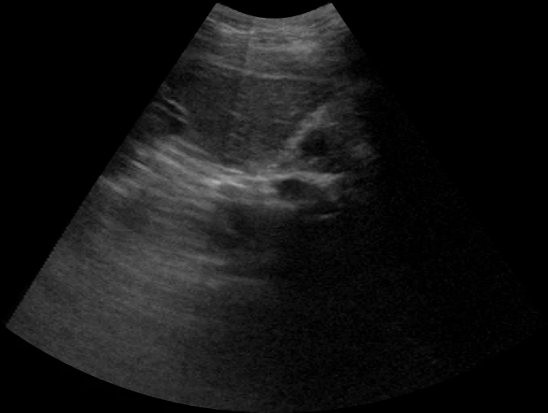
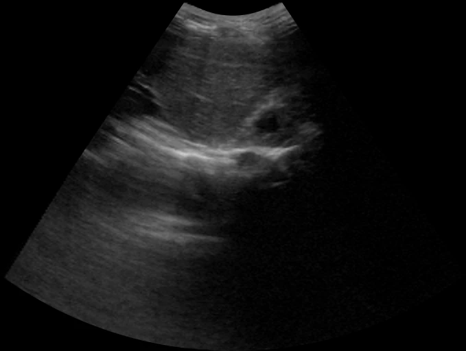
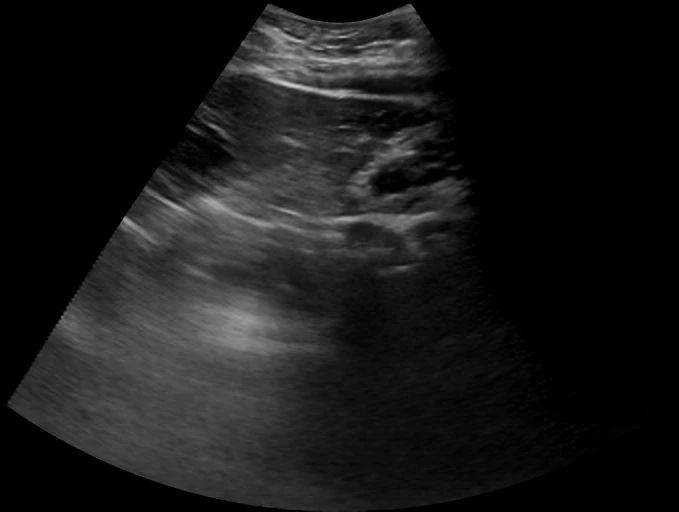
Vessel contrast Δμ −0.09
Output
The record of Fig. 1 (validation view, liver). Labels: liver boundary (light violet) and visible vessels (violet) from the source CT. Vessel contrast Δμ: mean intensity of the visible liver minus that of the visible vessels; positive values mean darker vessels, as in clinical ultrasound. UNSB: the baseline of the comparison below.

Virtual acquisition
A virtual probe samples the abdomen from the front for liver views and from the back for left kidney views. Each orientation is checked for skin contact across the central part of the probe. At each accepted pose, ray-based simulation produces an ultrasound image on the same grid as the CT slice and anatomical labels.
- Labeled views
- ~140,000
- CT cases
- 27 liver · 11 kidney
- Clinical recordings
- 65 · 12 subjects
Bridge architecture and training
During training, a frozen ultrasound model (UltraSAM3) segments the organ in each prediction. One loss compares its mask with the CT label in visible tissue. A second constrains the relative echogenicity of visible fine structures: vessels and the renal medulla must appear darker than the surrounding parenchyma.

Results
SonoBridge was compared with seven unpaired translation methods on liver and kidney, using a blinded reader study and distribution distances to unpaired clinical ultrasound.
- Best anatomical match
- 68%
- Most realistic
- 3.80 · 4.11
- Distribution distances
- 4 of 4
- Refinement time
- 23.3 ms
of reader trials, against at most 7% for any baseline (chance 12.5%)
liver · kidney realism, highest of eight methods; clinical frames 4.03 · 4.04
lowest on liver and kidney; liver FID −19% and KID −36% relative to UNSB
per image, including preprocessing, on one NVIDIA RTX PRO 6000
Blinded reader study
Readers compared eight outputs with the CT slice and its labels for 16 liver and 10 kidney views and chose the best anatomical match. In a separate task, they scored individual images for realism from 1 to 5 using 9 liver and 8 kidney views.
Best anatomical match % of trials · line: chance 12.5%
Realism rating 1–5 · line: clinical frames
reader-study table
| Method | Liver | Kidney | ||
|---|---|---|---|---|
| Match | Realism | Match | Realism | |
| SonoBridge | 71.9% | 3.80 | 61.0% | 4.11 |
| CycleGAN | 3.1% | 3.17 | 14.0% | 3.96 |
| CUT | 1.3% | 3.14 | 2.0% | 3.74 |
| UNSB | 2.5% | 3.44 | 9.0% | 3.84 |
| SynDiff | 5.0% | 2.07 | 0.0% | 1.91 |
| StegoGAN | 3.8% | 3.20 | 3.0% | 3.54 |
| SANTA | 0.6% | 2.64 | 5.0% | 3.41 |
| SASAN | 8.1% | 2.78 | 5.0% | 3.51 |
Comparison with seven unpaired methods
Use ← and → to switch methods. All methods start from the same simulated image.
Fig. 5. Liver (three views) and kidney (two views) test views: clear acoustic window, modeled shadow, and challenging structure. All methods receive the same simulated image; CT is for reference. Labels: target organ (light violet) and fine structure (dark violet). Clinical reference: the unpaired clinical frame most similar to the labels, not ground truth. The paper figure also marks visible vessels and the rib shadow with boxes.
 Paper figure: all methods side by side (Fig. 5)⤢
Paper figure: all methods side by side (Fig. 5)⤢
Distribution distances to clinical ultrasound
Inception-v3 distances
| Method | Liver 1,200 views · 8 cases | Kidney 974 views · 5 cases | ||
|---|---|---|---|---|
| FID | KID | FID | KID | |
| SonoBridge | 59.81 | 4.63 | 33.48 | 1.83 |
| CycleGAN | 161.43 | 25.56 | 51.32 | 4.78 |
| CUT | 81.68 | 9.00 | 39.98 | 1.91 |
| UNSB | 73.80 | 7.22 | 34.46 | 1.94 |
| SynDiff | 118.61 | 14.61 | 84.52 | 10.99 |
| StegoGAN | 92.13 | 8.36 | 79.40 | 9.58 |
| SANTA | 85.73 | 7.63 | 49.91 | 3.51 |
| SASAN | 78.35 | 7.71 | 48.34 | 4.55 |
Fréchet and kernel inception distances (FID and KID) compare the synthesized and unpaired clinical images separately for each organ. Lower is better. KID is scaled by 100.
BiomedCLIP distances
| Method | Liver 1,200 views · 8 cases | Kidney 974 views · 5 cases | ||
|---|---|---|---|---|
| FDB | KDB | FDB | KDB | |
| SonoBridge | 221 | 82.6 | 131 | 48.6 |
| CycleGAN | 1044 | 710.4 | 319 | 163.1 |
| CUT | 800 | 541.8 | 158 | 49.3 |
| UNSB | 553 | 366.2 | 171 | 73.7 |
| SynDiff | 348 | 202.1 | 683 | 505.7 |
| StegoGAN | 555 | 314.2 | 525 | 333.8 |
| SANTA | 548 | 330.0 | 361 | 207.8 |
| SASAN | 515 | 332.7 | 358 | 225.3 |
FDB and KDB are the Fréchet and kernel distances in BiomedCLIP’s biomedical image features. Both are unscaled, and lower values indicate closer agreement with clinical ultrasound.
Bold marks the best value in each column. Underlining marks the runner-up.
Feature space

Anatomical correspondence
LiverUSRecon, a liver segmentation model that is not used in training, segments the liver in each output. Its boundary follows other structures on the UNSB output, but follows the source boundary on the SonoBridge output, also between the modeled rib shadows.
The reader study judges the same agreement on more views: readers chose SonoBridge as the best anatomical match in 71.9% of liver and 61.0% of kidney trials.

Ablations
Within each organ, all variants share the data, backbone, training schedule and bridge losses; they remove the anatomical conditions or the supervision, or replace the simulated source.
Conditions, not only supervision
Using the source anatomy as a condition of the generator, and not only as supervision during training, lowered both BiomedCLIP distances on liver and kidney (liver FDB 221 against 270).
Structural maps and semantic loss
Removing the fine-grained structural maps or the semantic loss lowered FID and KID on liver but raised both BiomedCLIP distances. Without the semantic loss, FDB rose by 71%, and the output shows structures absent from the labels (box).
Simulated source
Translating the CT slice or the label map directly, without the pose-dependent echoes and shadows of the simulated image, gave larger distances than the full model on all four measures and on both organs.

ablation table (Table IV)
| Configuration | Liver | Kidney | ||||||
|---|---|---|---|---|---|---|---|---|
| FID | KID | FDB | KDB | FID | KID | FDB | KDB | |
| Full | 59.81 | 4.63 | 221 | 82.6 | 33.27 | 1.77 | 132 | 49.7 |
| No Cfine | 54.99 | 4.03 | 284 | 153.7 | 34.53 | 1.61 | 171 | 70.8 |
| No Corg | 62.69 | 5.60 | 262 | 139.6 | 33.25 | 1.65 | 181 | 94.1 |
| No conditions | 62.12 | 5.65 | 270 | 125.0 | 29.84 | 1.25 | 136 | 58.9 |
| No ℒsem | 55.84 | 4.17 | 377 | 208.0 | 33.44 | 1.65 | 149 | 67.0 |
| CT → US | 63.98 | 6.20 | 272 | 152.4 | 49.58 | 4.43 | 425 | 255.0 |
| Label map → US | 72.31 | 7.37 | 368 | 227.5 | 35.88 | 1.99 | 335 | 174.8 |
No Cfine, No Corg and No conditions remove the fine-grained structural maps, the organ-level semantic context, or both from the generator input; anatomical supervision is kept. No ℒsem removes the semantic loss. CT → US and Label map → US replace the simulated image with the CT slice or a color-coded label map. The kidney full model is resampled with the variants. KID is scaled by 100.
Control at a fixed pose
Increasing the fine-structure weight λ from 0 to 1 raised mean vessel contrast from 0.015 to 0.154 across 1,200 liver views. Shadows can also be edited without retraining: enlarging the left bone shadow extends it from 36% to 73% of the sector, and the output darkens there while the vessels inside it fade.

Resources
Research code and data
We plan to release the acquisition and refinement code together with simulated ultrasound images, aligned anatomical labels and probe poses.